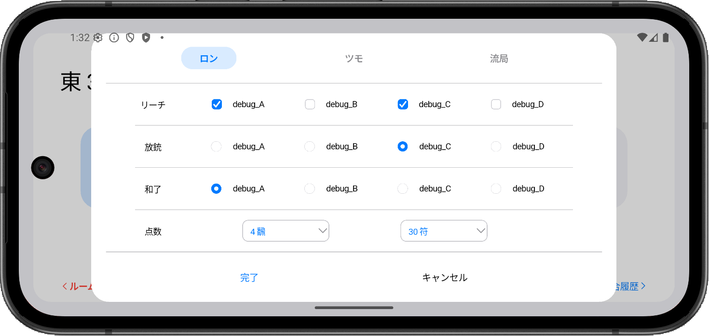
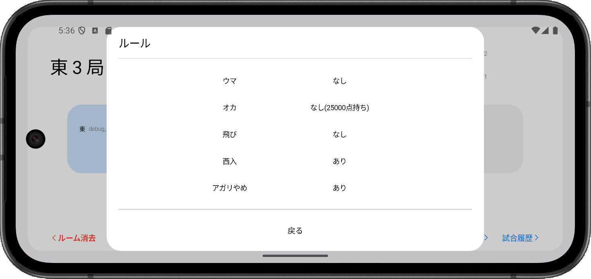

Dart / Flutter / Riverpod / WebSocket / Figma
前作の反省を生かし再設計した点数共有アプリ。
前作はその場で実装したい機能を追加した結果、後半に行くにつれ大規模な改善が必要になったことから設計の大事さを実感し、今作のスタートはFigmaでデザインを決めつつ事前に要件を考えた。
主な改変は点数共有をメインにしてユーザーの入力数を減らすこと、ソケット通信を実現すること。
mahjong_lite
名前とルームIDに「debug」を入力すると動作確認が可能
各ページの遷移図
ルーム作成or参加ページ
各端末とソケット通信開始するための入室ページ。
名前とルールを入力しルームを作成すると、そのプレイヤーは親となりルームIDが発行される。他のプレイヤーは名前とオフラインで共有したルームIDを入力しルームに参加する。


点数共有ページ
各プレイヤーの持ち点、供託・本場、局数、試合数などのゲーム状況を表示するページ。
「東3局」をタップするとその局の点数移動を入力できる。入力の権限は試合開始時に親だった人に限る。
また中央の試合数をタップすると最初に決めたルールが表示される。

点数共有ページ
局が進行し試合が終了すると局表示が「終局」となる。タップするとその試合の結果が表示され、次の試合の場決めを行いゲーム状況がリセットされる。
局内容ページ
試合の点数状況を局ごとに確認ができるページ。縦軸は局、横軸は起家順で表示。
点数共有ページにて点数移動を入力を間違えた場合、最新の入力のみ修正が可能。コメント付きで再入力をすると、表示には赤い線が引かれ変更理由が確認できる。
入力の権限は試合開始時に親だった人に限る。
試合履歴ページ
終局した試合の最終持ち点を確認できるページ。縦軸は試合、横軸は順位で表示。
各試合ごとに点数の推移グラフを表示する(未実装)。
集計ページ
最終的なスコアを表示するページ。縦軸は試合、横軸は第1試合起家順で表示。
試合履歴ページとは違い、誰が何点持って試合を終局したのかを分かりやすくした。
「合計」をタップすると最終的なトータルスコアを表示する。